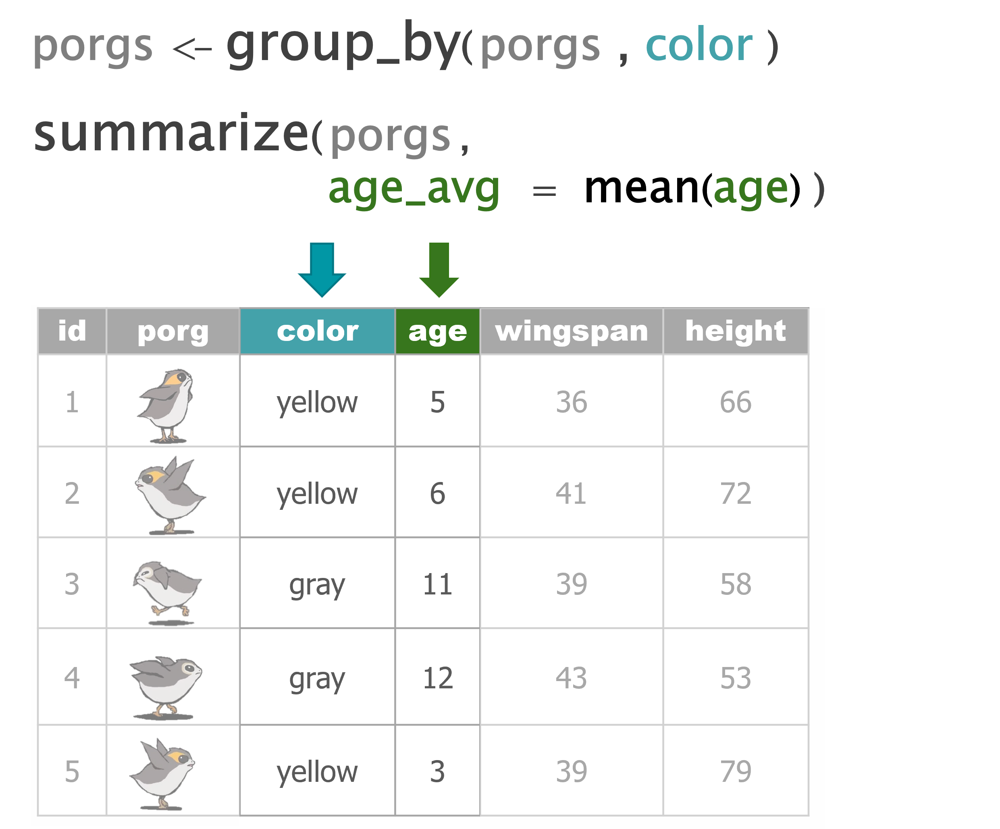
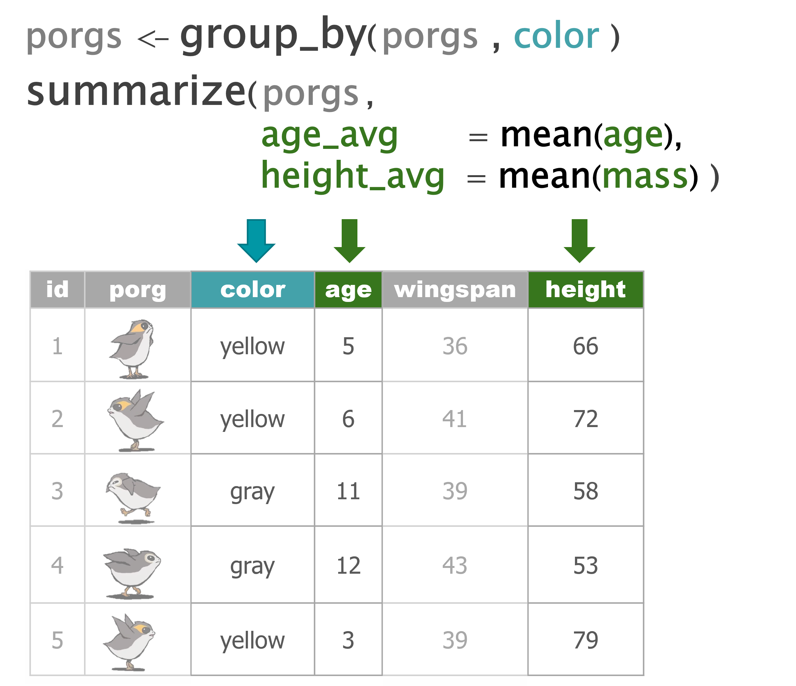
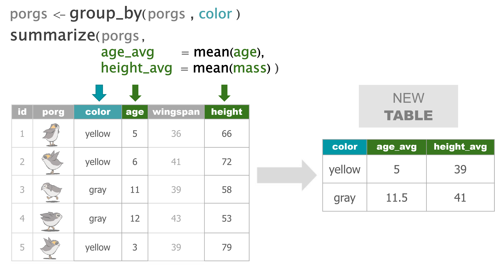
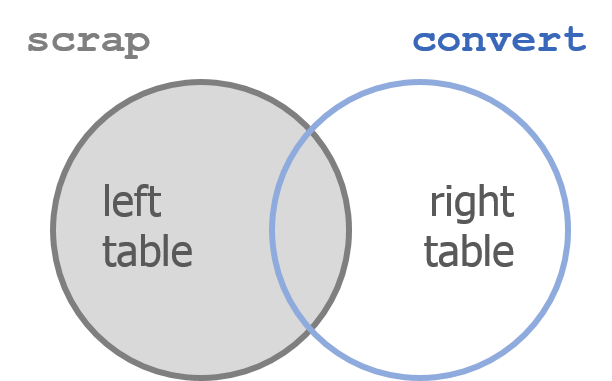
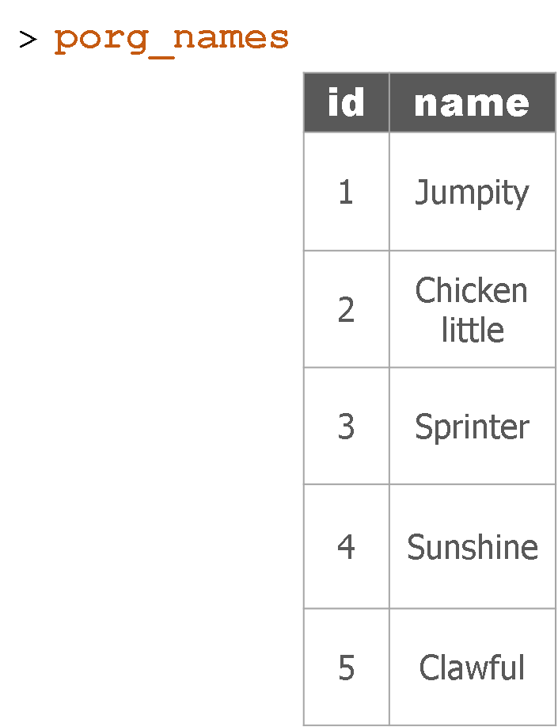
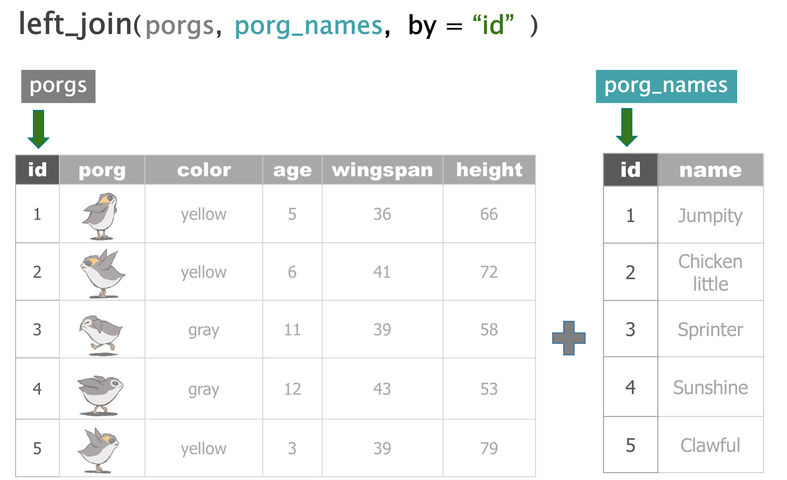
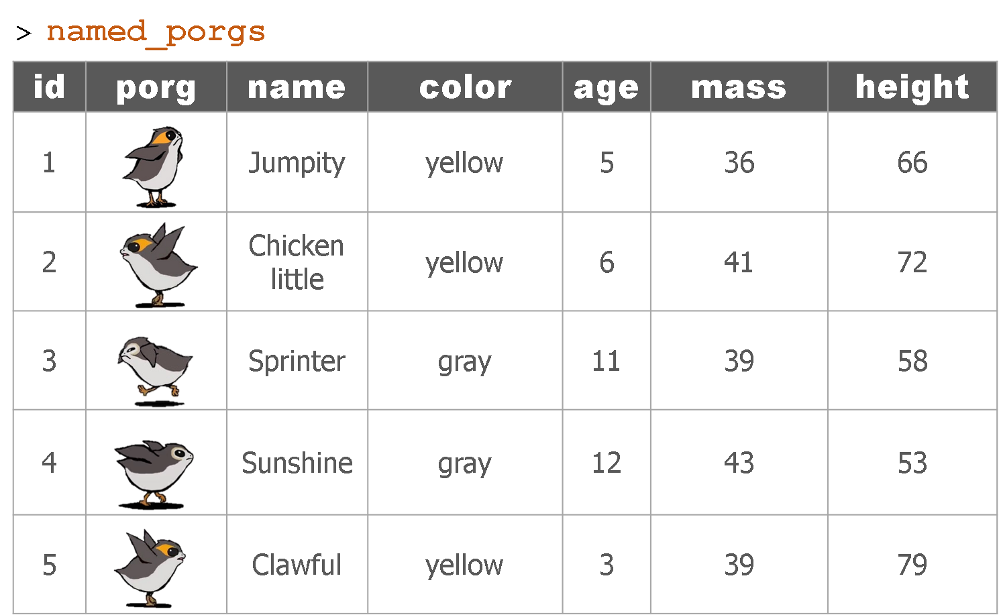

Good morning, Jedis!

1 Review - New project
New data -> New project!
Below is an example workflow for an R project:
- Create a new project
- Read the data
- Clean column names
- Explore data
- Plot the data
- Clean the data
- View the data closer
- Summarize the data
- Save the results
- Share with friends
Porg review
The poggle of porgs has returned to help review the dplyr functions. Follow along by reading the porg data from the URL below.
library(readr)
porgs <- read_csv("https://mn-r.netlify.com/data/porg_data.csv")





Wait…. So where’s Finn?
Finn needs us!
Turn this ship around BB8, Finn needs us back on Jakku. We’re going to have to get better at our roll call procedure. Here we come Finn. Blast off!
2 Jakku re-visited
Okay, so we’re back on this ol’ dust bucket planet. Let’s try not to forget anyone this time. Data droid, let me know if anyone goes missing.
A scrappy ransom
Mr. Baddy Plutt is demanding 10,000 items of scrap for Finn. Sounds expensive, but lucky for us he didn’t clarify the exact items. Let’s find the scrap that weighs the least per shipment and try to make this transaction as light as possible.
Update from BB8!
BB8 was busy on our flight back to Jakku, and recovered a full set of scrap records from the notorious Unkar Plutt. Let’s take a look.
library(readr)
library(dplyr)
# Read in the full scrap data
scrap <- read_csv("https://mn-r.netlify.app/data/starwars_scrap_jakku_full.csv")Take a look at the NEW scrap data and see if we have the weight of all the items.
# What unit types are in the data?
unique(scrap$units)## [1] "Cubic Yards" "Items" "Tons"Or return results as a data frame
distinct(scrap, units)## # A tibble: 3 × 1
## units
## <chr>
## 1 Cubic Yards
## 2 Items
## 3 TonsHmmm…. So how much does a cubic yard of Hull Panel weigh?
A lot? 32? Maybe…
I think we’re going to need some more data.
Weight conversion

It took a while, but with a few droid bribes BB8 was able to track down a Weight conversion table from his droid buddies. Our current data shows the total cubic yards for some scrap shipments, but not how much the shipment weighs.
Read the weight conversion table
# The data's URL
convert_url <- "https://mn-r.netlify.app/data/conversion_table.csv"
# Read the conversion data
convert <- read_csv(convert_url)
head(convert, 3)## # A tibble: 3 × 3
## item units pounds_per_unit
## <chr> <chr> <dbl>
## 1 Bulkhead Cubic Yards 321
## 2 Hull Panel Cubic Yards 641
## 3 Repulsorlift array Cubic Yards 467Oh my stars! A cubic yard of Hull Panel weighs 641 lbs. I knew it!
Let’s join this new conversion table to the scrap data to make our calculations easier. To do that we need to meet a new function.
Say Hello to our friend left_join()!
3 Join tables with left_join
Joining 2 tables

left_join(scrap, convert, by = c("columns to join by"))
Left join works like a zipper to combine 2 tables based on one or more variables. It’s called “left”-join because the entire table on the left side is retained.
Anything that matches from the right table gets to join the party, but any rows that don’t have a matching ID will be ignored.
Adding porg names
Remember our porg friends? How rude of us not to share their names.
Here’s a table of their names.

But who’s who? Let’s join their names to the rest of the data based on the
IDcolumn.

The joined table

More joining
Star Wars characters
left_join() adds columns to your table by pulling them from another table.
Imagine you have the two tables below.
- The left table has character names and heights
- The right table has names and homeworlds.
Since both tables share a common name column, we can join the tables together using the name column as the joining key.
starwars_heights
| name | height |
|---|---|
| Luke Skywalker | 172 |
| C-3PO | 167 |
| Darth Vader | 202 |
| Leia Organa | 150 |
| Greedo | 246 |
starwars_homeworlds
| name | homeworld |
|---|---|
| Luke Skywalker | Tatooine |
| C-3PO | Tatooine |
| Darth Vader | Tatooine |
| Leia Organa | Alderaan |
| Ayla Secura | Ryloth |
Uh oh. There’s no “Ayla Secura” in the height table and there’s no “Greedo” in the homeworlds table. Can we still join the tables? Run the code below to see what happens.
library(dplyr)
# Create new tables
starwars_heights <- tibble(name = c("Luke Skywalker", "C-3PO", "Darth Vader", "Leia Organa", "Greedo"),
height = c(172, 167, 202, 150, 246))
starwars_homeworlds <- tibble(name = c("Luke Skywalker", "C-3PO", "Darth Vader", "Leia Organa", "Ayla Secura"),
homeworld = c("Tatooine", "Tatooine", "Tatooine", "Alderaan", "Ryloth"))
## Tell left_join which columns to use as the key with:
## by = c("key_left" = "key_right")
height_and_homeworld <- left_join(starwars_heights, starwars_homeworlds,
by = c("name" = "name"))
height_and_homeworld| name | height | homeworld |
|---|---|---|
| Luke Skywalker | 172 | Tatooine |
| C-3PO | 167 | Tatooine |
| Darth Vader | 202 | Tatooine |
| Leia Organa | 150 | Alderaan |
| Greedo | 246 | NA |
Did it work?
When left_join adds the homeworlds column to the starwars_heights table it only adds a value for the characters when the tables have a matching character name. When R couldn’t find “Greedo” in the homeworld table, the homeworld for that row was recorded as missing or NA.
Multiple records

Now imagine the table starwars_homeworld has two records for C-3PO, each with a different homeworld listed.
What will happen when you join the two tables?
starwars_heights
| name | height |
|---|---|
| Luke Skywalker | 172 |
| C-3PO | 167 |
| Darth Vader | 202 |
| Leia Organa | 150 |
| Greedo | 246 |
starwars_homeworlds
| name | homeworld |
|---|---|
| Luke Skywalker | Tatooine |
| C-3PO | Tatooine |
| C-3PO | Tantive IV |
| Darth Vader | Tatooine |
| Leia Organa | Alderaan |
| Ayla Secura | Ryloth |
When you run the code below you’ll see that left_join is very thorough and adds each additional homeworld it finds for C-3PO as a new row in the joined table.
# Create new tables
starwars_heights <- tibble(name = c("Luke Skywalker", "C-3PO", "Darth Vader", "Leia Organa", "Greedo"),
height = c(172, 167, 202, 150, 173))
starwars_homeworlds <- tibble(name = c("Luke Skywalker", "C-3PO", "C-3PO", "Darth Vader", "Leia Organa", "Ayla Secura"),
homeworld = c("Tatooine", "Tatooine", "Tantive IV", "Tatooine", "Alderaan", "Ryloth"))
# Join the tables together by Star Wars character name
height_and_homeworld <- left_join(starwars_heights, starwars_homeworlds)
# Check number of rows
nrow(height_and_homeworld)
height_and_homeworld| name | height | homeworld |
|---|---|---|
| Luke Skywalker | 172 | Tatooine |
| C-3PO | 167 | Tatooine |
| C-3PO | 167 | Tantive IV |
| Darth Vader | 202 | Tatooine |
| Leia Organa | 150 | Alderaan |
| Greedo | 173 | NA |
This results in a table with one extra row than we started with in our heights table. So growing table sizes are a sign of duplicate records when using left_join().
In practice, when you see this you’ll want to investigate why one of your tables has duplicate entries, especially if the observations for the two rows are different – as it was for C-3PO’s homeworld.
Are there really two different Star Wars characters named C-3PO, or did someone make two different guesses about the droid’s homeworld? Or maybe the data simply has a mistake? It happens.
Back to the scrap yard
Let’s apply our new left_join() skills to the scrap data.
First, let’s load the full scrap data.
library(readr)
library(dplyr)
# Read in the larger scrap database
scrap <- read_csv("https://mn-r.netlify.app/data/starwars_scrap_jakku_full.csv")
# what units types are in the data?
distinct(scrap, units)## # A tibble: 3 × 1
## units
## <chr>
## 1 Cubic Yards
## 2 Items
## 3 TonsJoin the conversion table to scrap
Look at the tables. What columns in both tables do we want to join by?
names(scrap)
names(convert)Let’s join by item and units.
# Join the scrap to the conversion table
scrap <- left_join(scrap, convert,
by = c("item" = "item",
"units" = "units"))Want to save on typing?
left_join() will automatically search for matching columns if you don’t use the by= argument. So if you know 2 tables share a column name you don’t have to specify how to join them. The code below does the same as above.
scrap <- left_join(scrap, convert)
head(scrap, 4)## # A tibble: 4 × 8
## receipt_date item origin desti…¹ amount units price…² pound…³
## <chr> <chr> <chr> <chr> <dbl> <chr> <dbl> <dbl>
## 1 4/1/2013 Bulkhead Crate… Raiders 4017 Cubi… 1005. 321
## 2 4/2/2013 Starship sensor array Outsk… Trade … 1249 Cubi… 1129. 637
## 3 4/3/2013 Starship sensor array Outsk… Niima … 4434 Cubi… 1129. 637
## 4 4/4/2013 Hull Panel Crate… Raiders 286 Cubi… 843. 641
## # … with abbreviated variable names ¹destination, ²price_per_pound,
## # ³pounds_per_unitHelp!
For more details on the join family of functions, you can type ?left_join to see all the arguments and options.
Total pounds per shipment
Let’s mutate()!
Now that we have pounds per unit we can use mutate to calculate the total pounds for each shipment.
Fill in the blank
scrap <- mutate(scrap, total_pounds = amount * ___________ )Show code
scrap <- mutate(scrap, total_pounds = amount * pounds_per_unit)Total price per shipment
Explore!
Total price
We need to do some serious multiplication. We have the total amount shipped in pounds, and the price per pound, but we want to know the total price for each shipment.
How do we calculate that?
# Calculate the total price for each shipment
scrap <- mutate(scrap, credits = ________ * ________ )
Total price
We need to do some serious multiplication. We now have the total amount shipped in pounds, and the price per pound, but we want to know the total price for each transaction.
How do we calculate that?
# Calculate the total price for each shipment scrap <- mutate(scrap, credits = total_pounds * ________ )
Total price
We need to do some serious multiplication. We now have the total amount shipped in pounds, and the price per pound, but we want to know the total price for each transaction.
How do we calculate that?
# Calculate the total price for each shipment
scrap <- mutate(scrap, credits = total_pounds * price_per_pound)
Price$ per item
Great!
Let’s add one last column. We can divide the shipment’s credits by the amount of items to get the price_per_unit.
# Calculate the price per unit
scrap <- mutate(scrap, price_per_unit = credits / amount)4 summarize()

summarize() uses summary functions mean() or sum() to collapse the data down to a single summary row. To get started we’ll need some summary functions like sum(), mean(), min(), and max().
sum()
Use summarize() and sum() to find the total credits of all the scrap combined.
summarize(scrap, total_credits = sum(credits))mean()
Use summarize() and mean() to calculate the mean price_per_pound in the scrap report.
summarize(scrap, mean_price = mean(price_per_pound, na.rm = T))Note
What’s the average of missing data? I don’t know.
Did you see the na.rm = TRUE inside the mean() function. This tells R to ignore empty cells or missing values that show up in R as NA. If you leave na.rm out, the mean function will return ‘NA’ if it finds a missing value anywhere in the data.
median()
Use summarize to calculate the median price_per_pound in the scrap report.
summarize(scrap, median_price = median(price_per_pound, na.rm = TRUE))
max()
Use summarize to calculate the maximum price per pound any scrapper got for their scrap.
summarize(scrap, max_price = max(price_per_pound, na.rm = TRUE))
min()
Use summarize to calculate the minimum price per pound any scrapper got for their scrap.
summarize(scrap, min_price = min(price_per_pound, na.rm = TRUE))
sd()
What is the standard deviation of the credits?
summarize(scrap, stdev_credits = sd(credits))
quantile()
Quantiles are useful for finding the upper or lower range of a column. Use the quantile() function to find the the 5th and 95th quantile of the prices.
summarize(scrap,
price_5th_pctile = quantile(price_per_pound, 0.05, na.rm = TRUE),
price_95th_pctile = quantile(price_per_pound, 0.95))Hint: Add na.rm = T to quantile().
n()
n() stands for count.
Use summarize and n() to count the number of scrap records.
summarize(scrap, scrap_records = n())Explore!
- Create a summary of the scrap data that includes 3 of the summary functions above. The following is one example.
scrap_summary <- summarize(scrap,
max_credits = __________,
weight_90th_pct = quantile(total_pounds, 0.90),
count_records = __________,- Use summarize and
n()to count the number of reported scrap records going toNiima outpost.
Hint: Use filter() first.
niima_scrap <- filter(scrap, destination == "Niima Outpost")
niima_scrap <- summarize(niima_scrap, scrap_records = n())How about a count of the records for every city?
It’d sure be nice if we could easily count the records for every city.
5 group_by() category
group_by() gives us the power to calculate separate results for each category in the data. This could be the average concentration at each of your monitoring sites, or the total emissions of a pollutant from each facility or stack.
Bargain hunters
Who’s selling goods for cheap? Use group_by with the column origin to find the mean(price_per_pound) at each Origin City.
scrap_means <- group_by(scrap, origin)
scrap_means <- summarize(scrap_means,
mean_price = mean(price_per_pound, na.rm = TRUE))Rounding digits
Rounding
You can round the prices to a certain number of digits using the round() function. We can finish by adding the arrange() function to sort the table by our new column.
scrap_means <- summarize(scrap,
mean_price = mean(price_per_pound, na.rm = TRUE),
mean_price_round = round(mean_price, digits = 2))
scrap_means <- arrange(scrap_means, mean_price_round)
scrap_means <- ungroup(scrap_means)Note
The round() function in R does not automatically round values ending in 5 upwards. It uses scientific rounding, which rounds values ending in 5 to the nearest even number. So 2.5 rounded to the nearest even number rounds down to 2, and 3.5 rounded to the nearest even number rounds up 4.
Busiest scrap city
So who’s making the most transactions? Try using group_by with the column origin to count the number of scrap records at each city. We can use the tiny-tiny function n() to count the number of rows.
scrap_counts <- group_by(scrap, origin)
scrap_counts <- summarize(scrap,
origin_count = n())
scrap_counts <- ungroup(scrap_counts)Spock-tip!
Ending with ungroup() is good practice. This prevents your data from staying grouped after the summarizing has been completed.
6 Save files
Let’s save the mean price table we created to a CSV. That way we can send it to Rey. To save a table we can use the write_csv() function from our favorite readr package.
# Write the file to your results folder
write_csv(scrap_means, "results/prices_by_origin.csv")Note
By default, R will overwrite a file if the file already exists in the same folder. To be safe, save processed data to a new folder called results/ and not to your raw data/ folder.
7 Grouped mutate()
We can bring back mutate to add a column based on the grouped values in a data set. For example, you may want to add a column showing the mean price by origin to the whole table, but still keep all of the records. This is a good way to add values to the table to serve as a reference point.
How does the price of X compare to the average price?
When you combine group_by and mutate the new column will be calculated based on the values within each group. Let’s group by origin to find the mean() price per pound at each origin.
scrap <- group_by(scrap, ________ )
scrap <- mutate(scrap,
origin_mean_price = mean(price_per_pound, na.rm = TRUE))
scrap <- ungroup(scrap)Add
round()to your script to round the value of origin_mean_price to 1 digit.
Save results
write_csv(scrap, "results/scrap_day2.csv")8 A sickness grows…
Your turn! Practicing joining and summarizing
A sickness is spreading throughout the galaxy. To slow its spread should we restrict travel to some planets? Or is it too late?
Follow the steps below to collect the current disease records and summarize cases by planet. To do so, you’ll need to join the disease records to a separate table with the planet information.
Create a new project
Go to File > New Project... > New Directory > New Project
- Name the project
sickness
Get the disease data
Click the button above to download the Excel file disease_records.xlsx
- Save the file to your project folder
If the file was automatically downloaded to your Downloads folder, move or copy the file to your project folder.
Load the data
Create a new R script and save it as disease_report.R
To load the data, use read_xlsx() from the readxl library to load the disease data into R. Add the code below to your R script and ensure the file name matches the file added to your project folder.
library(readxl)
records <- read_xlsx("disease_records.xlsx")Plan B - Read the data from CSV
library(readr)
records <- read_csv("https://mn-r.netlify.app/data/disease_records.csv")Explore
Use glimpse() to view a summary of the data columns.
Planet data
To find the planets these records are associated with, we will need to join the records data to the starwars data set in the package dplyr.
To load the planet data, add the following to your R script:
library(dplyr)
people <- starwarsExplore
What is the number of distinct values in the
homeworldcolumn of the people data set?
- Use
n_distinct()to count the number of ‘homeworld’ planets.
summarize(people, n_planets = n_distinct( _______ ))What are they? Print the unique values of the
homeworldcolumn in the people data set:
- Use
distinct()to show the unique values ofhomeworldcolumn.
distinct(people, ________ )Is one of the homeworlds
NA? What does the ‘NA’ mean here?
Join the homeworld planets to disease records
Complete the script below to join the two data sets.
- In the 1st blank, with the name of the data you want to join to
records.
- In the 2nd blank, put the column name found in both data sets that you want to join by in quotes
"". This is the column that both tables have in common.
You can run
names(records)to view the column names in the dataframe.
joined <- left_join(records, _______ ,
by = "______" )Summarize the records by homeworld
Use group_by() to group the records by the planet column:homeworld
joined <- group_by(joined, homeworld) Now you can use the n() function to find the number of records by homeworld.
planet_totals <- summarize(joined, cases = _______ )Restricted travel?
Which planet has the most cases?
Use arrange() and desc() to sort the results by the cases column.
planet_totals <- arrange(planet_totals, ________ )How many planets are off limits?
The health liaison has recommended cutting off travel to any planet with more than 20 cases.
Use filter() to keep only the planets in the data with more than 20 in the cases column.
off_limits <- filter(planet_totals, ________ )Save
- Use
write_csv()to save the planet list as “restricted_planets.csv”.
- Save your R script.
- Clap 3 times for your great work.
- When ready, return to your
jakkuproject.